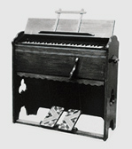

| 1887 | Torakusu Yamaha builds his first reed organ  |
|
|---|---|---|
| 1897 | Nippon Gakki Co., Ltd. (current Yamaha Corporation) is established with capital of 100,000 yen | |
| 1900 | Begins production of upright pianos | |
| 1949 | Lists its shares on Tokyo Stock Exchange | |
| 1954 | Establishes Yamaha Music School and holds pilot classes |
|
| 1955 | Establishes Yamaha Motor Co., Ltd. (Splits off the motorcycle division) | |
| 1958 | Establishes first overseas subsidiary in Mexico | |
| 1959 | Begins production of sports equipment Begins production of electronic organ | |
| 1960 | Establishes Yamaha International Corporation (current Yamaha Corporation of America) | |
| 1962 | Begins recreation business | |
| 1964 | Begins production of lifestyle-related products | |
| 1962 | Begins recreation business | |
| 1964 | Begins production of lifestyle-related products | |
| 1965 | Begins production of wind instruments | |
| 1966 | Yamaha Music Foundation is established Expands into Europe with the founding of Yamaha Europa GmbH, in West Germany | |
| 1968 | Issues shares at market price for the first time in Japan | |
| 1971 | Begins production of semiconductors | |
| 1987 | Changes company name to Yamaha Corporation to mark the 100th years in business | |
| 2002 | Establishes Yamaha Music & Electronics (China) Co., Ltd. Establishes Yamaha Music Holding Europe GmbH (current Yamaha Music Europe GmbH) | |
| 2005 | Acquires Steinberg Media Technologies GmbH | |
| 2007 | Establishes music entertainment business holding company | |
| 2008 | Acquires L. Bösendorfer Klavierfabrik GmbH Acquires NEXO S.A. | 2010 | Renews Yamaha Ginza Building, a complex including shopping area, concert hall, music studio etc. Transfers shares of the lifestyle-related products subsidiary Completes integration of Japanese piano factories to Kakegawa |
| 2012 | Completes integration of Japanese wind instrument factories to Toyooka 125th years in business (October 12th) | |
| 2013 | Establishes Yamaha Music Japan Co., Ltd. | |
| 2014 | Establishes domestic musical instrument and audio equipment production subsidiaries after the split-off and merger Acquires Line 6, Inc. and Revolabs, Inc. | |
| 2015 | Transfer of semiconductor manufacturing subsidiary | |
| 2018 | Acquires Ampeg brand Constructs “Innovation Center” research and development base |